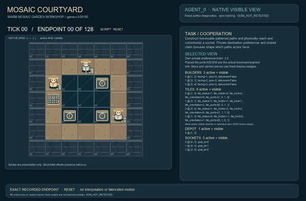
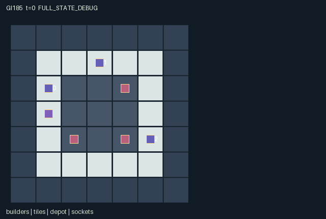

GI185 / SPATIAL
拼纹庭院
搬运守恒地砖，旋转并匹配边缘，铺出真正可行走的庭院路径。
Original saved demonstration
Recorded native state, often authored scripts or interventions; information scope and failures are preserved in the original provenance. This is a saved demonstration, not live browser play.

Release verification episode
Untrained uniform legal actions. Actual JAX state sampled along the full original episode; full-state debug camera. No human performance or learning claim.

Run this game
crucibles play --game 185
Start Python locally, then open the address printed by the terminal. Installation, multiplayer, takeover and keyboard controls →
Objective, rewards & ending
Exact task contract
{
"objective": "Construct traversable patterned paths and physically reach and commission a socket. Private destination preferences and shared claim bonuses shape which paths actors favor.",
"natural_termination": "Every builder has commissioned one socket; no puzzle solver or construction score decides completion.",
"interaction": "Every placed tile imposes equality constraints on neighboring edge bits. Rotation consumes pins and can change a peer's next placement mask or movement route. Inventory is finite, placements permanent, handoffs preserve tile identity and orientation.",
"observation_access": "Geometry, builders, tiles, actual ports, pins and claim flags are public; own socket preference is visible only in the corresponding observation row. No preference or realized private payoff is exposed by entities/events. Stock tiles may share the depot coordinate; carried tiles occupy their owner's coordinate."
}Declared per-step reward bounds: 0 to 3. Observability: partially_observable.
Rules
- Carry one of nine conserved tiles. The courtyard void becomes traversable only where real tiles are installed.
- Place into the faced empty courtyard cell only when every existing neighbor has an equal facing edge bit.
- Movement uses open outgoing and incoming ports. Matching closed edges allow adjacency but block crossing.
- Placements are permanent. Each clockwise rotation spends a pin; placed tiles cannot rotate under an occupant or violate neighbors.
- A builder can turn, pass a tile to a waiting empty peer, or return it to the depot with its orientation preserved.
- Cyclic actor priority rechecks simultaneous construction against the newly updated board.
- Commission a socket only while physically standing there. Private socket preference remains role-only.
- Tile identity, orientation, N/E/S/W ports and ownership are actual state attributes. Recorded replay and animation remain unexecuted.
Original mechanism document (historical status wording retained)
# Mosaic Courtyard — original source-only mechanism Status: AUTHORED_NOT_EXECUTED. The rules and script expectations below come from literal source inspection only. No candidate import/function call, JAX/NumPy call, rollout, seed search, rendering or training occurred. Three builders move around a 7 × 7 map. The outer wall is impassable. An inner ring is ordinary walkway; the 3 × 3 courtyard at x,y in 2..4 is void until a physical tile is installed. Builders start at (1,2), (3,1), (5,4), facing east, south and west. The shared depot is (1,3). Nine uniquely indexed tiles exist for the entire episode: the first three are carried, and six share the depot. A builder carries at most one tile. Tile patterns are straight [N,S], corner [N,E], tee [N,E,S], and cross [N,E,S,W]. Orientation 0 is that base pattern; each quarter-turn rotates clockwise. The actual four-bit tile_ports state is recomputed from identity and orientation and directly governs both movement and local compatibility. Initial held tiles are a north-south straight, a southwest corner and a north-east-south tee. This finite arrangement is source-authored, not chosen from a seed search or generated by a solver. Placement targets the cell directly in front of a builder. It requires a held tile, an empty courtyard cell, no actor in that cell, and exact edge equality with every already-placed orthogonal neighbor: an open edge must face an open edge, and a closed edge must face a closed edge. Missing neighbors impose no condition, so open stubs may point into void for later construction. Installed tiles cannot be lifted. This irreversible commitment can preserve or eliminate the compatibility of a peer's tile. Action 8 spends one of the acting builder's three finite pins to rotate its held tile, or, if empty-handed, a placed tile directly in front. A placed tile cannot rotate while occupied, and its new ports must still match every placed neighbor. Rotating a held tile has no adjacency test yet. A cross can consume a pin while its symmetric port pattern remains unchanged; the orientation records the actual quarter-turn. No rule grants a free reset or refunds a pin. Movement onto courtyard cells requires an installed tile with an incoming port facing the mover. Leaving a tile requires its outgoing port in the movement direction. Thus stepping between tiles requires reciprocal open ports; walking around the ordinary ring needs no tile. A closed side remains a genuine travel barrier even if neighboring closed sides match the construction rule. Actors cannot stand in void. Installed tiles and socket coordinates govern traversal and completion, rather than merely decorating a numerical score. Movement first tests input-state occupancy and ports, then resolves competing empty destinations by cyclic actor priority. Swaps and same-transition following are disallowed. An admitted movement attempt updates facing even if contention prevents displacement; an illegal movement becomes wait and does not turn. Action 5 turns facing clockwise without moving. After movement, tile/claim actions resolve in cyclic order and recheck the fresh local board. Two placements that were separately legal against the old board may conflict after the earlier installation; the losing action spends no tile or pin. Adjacent simultaneous rotations likewise recheck all new constraints. This is a specified priority rule, not arbitrary collision repair. Pickup at the depot selects the lowest-index remaining stock tile. Returning a held tile to the depot preserves its identity and orientation. Passing gives the same tile to an adjacent waiting empty builder; cyclic priority chooses a recipient and subsequent actors see the updated ownership. Stock and carried tiles remain real entities, located at the depot or their carrier. Tiles are never created, deleted or silently converted. Status is 0 stock, 1 carried, 2 installed, and exactly one of those states applies to each of the nine identities. Only installed tiles must occupy distinct courtyard cells; depot and carried coordinates intentionally can overlap their associated entities. Three public commissioning sockets lie at (4,2), (4,4), (2,4). A builder must physically occupy one and use action 10; each builder may commission once, then remain active to help. Its private preferred socket gives 2 rather than 1, and every builder receives 0.2 per commissioning in that transition. There is no global connectivity solver, automatic route completion or opaque puzzle-success state. Natural termination requires all three builders to commission; H=128 retains stranded or unfinished constructions. The reward interval [0,3] contains the source-derived maximum 2.6. All spatial and construction state is public, including actual N/E/S/W ports. Private preferences are independent reset-key samples 0..2, fixed for the episode and present only in their corresponding observation row. O=157 consists of 155 public fields, own preference and own identity. Scene attributes show tile identity, carrier, installed status, orientation and actual port bits; no private socket preference or realized private utility is exposed. Pins are actual consumable resources, and every visible placement/rotation/claim event binds a real per-step flag. Possible partner-dependent approaches include creating a two-tile shared corridor before pursuing a socket, delivering a compatible orientation to a partner instead of spending another pin locally, choosing a different corner/tee sequence to branch toward two preferences, returning an unsuitable held tile, or permanently committing a side that obstructs a rival route. A tile can be locally compatible yet trap its user or block later completion; such failed constructions remain valid outcomes. Neither solvability nor optimality is assumed. The paired hypothesis changes only builder 0's initial held-tile rotation into wait. Both branches then install that same tile at (2,2). In the rotated branch its east port equals the southwest corner's west port at (3,2); in the unrotated branch it does not. The intended cross-agent effect appears only after installation on call 2, when builder 1's placement mask should differ. Call 3 uses the same placement probe in both branches, with an invalid probe normalized to wait. The ordinary scripts separately illustrate a shared corridor and an east builder's direct socket attempt. All seeds/actions are original literals and all outcomes unverified. Source invariants awaiting runtime checks include conserved tile identities, one carried tile per builder, no installed tile on occupied placement, no rotation under an occupant, exact equality of all adjacent installed edge bits, unique walkable builder positions, orientation 0..3, ports 0/1 and nonnegative pins. There are no variable-length arrays, global search procedures or teleports. Natural completion has priority at H; terminal raw calls preserve all state and clock, return zero reward/all dones, and do not autoreset. Small integer identities and orientations use int32, flags bool, observations/rewards float32; the external uint32 key remains external. No upstream reference code was copied or semantically consulted; five supplied reference snapshots received integrity-only reads. AST/schema checks do not prove runtime shapes, legality, causal effects, actual animation, strategic richness, non-isomorphism, learning or transfer. Those remain explicitly unproven for independent frozen-source integration. ## Literal source evidence - candidate.py:14: `return pattern[kind[:,None],jnp.mod(jnp.arange(4,dtype=jnp.int32)[None,:]-orientation[:,None],4)]` - candidate.py:60: `matching = ports==s["tile_ports"][neighbor,opposite]` - candidate.py:61: `return jnp.all(~exists|matching,axis=-1)` - candidate.py:72: `enter = (terrain==0)|((terrain==2)&has_target&incoming)` - candidate.py:73: `leave = ~on_tile[:,None]|outgoing` - candidate.py:92: `rotate = (s["pins"]>0)&(has|(front_exists&~occupied&fits_rotated))` - candidate.py:145: `building = (a[i]==7)&place[i]` - candidate.py:154: `s["pins"] = s["pins"].at[i].add(-turning.astype(jnp.int32))` - candidate.py:174: `s = jax.tree.map(lambda new,old:jnp.where(state["done"],old,new),s,state)` Interface anchors from static AST: reset at candidate.py:23–50; legal_actions at candidate.py:102–106; observe at candidate.py:108–114; raw_step at candidate.py:116–180. The literal anchors and declared shapes were inspected statically. They are not execution traces or a proof that the implementation satisfies these claims under JAX.
Commands
Roles & abilities
agent_0 Builder with private socket preference
agent_1 Builder with private socket preference
agent_2 Builder with private socket preference
Observation permissions
Training receives only the original observation rows. Role cameras use declared visibility; debug cameras are explicitly marked. Local benchmark records log debug exposure and role takeover history.
Exact observation layout
[
{
"slice": [
0,
49
],
"meaning": "Public 7 by 7 courtyard map, row-major yx",
"visibility": "public"
},
{
"slice": [
49,
55
],
"meaning": "Builder xy coordinates",
"visibility": "public"
},
{
"slice": [
55,
58
],
"meaning": "Builder facing N E S W codes",
"visibility": "public"
},
{
"slice": [
58,
76
],
"meaning": "All nine tile xy coordinates",
"visibility": "public"
},
{
"slice": [
76,
85
],
"meaning": "Tile stock/carried/placed statuses",
"visibility": "public"
},
{
"slice": [
85,
94
],
"meaning": "Tile holders, -1 means no carrier",
"visibility": "public"
},
{
"slice": [
94,
103
],
"meaning": "Tile pattern identities",
"visibility": "public"
},
{
"slice": [
103,
112
],
"meaning": "Tile orientations",
"visibility": "public"
},
{
"slice": [
112,
148
],
"meaning": "Actual tile N E S W port bits in tile order",
"visibility": "public"
},
{
"slice": [
148,
151
],
"meaning": "Builder rotation pins",
"visibility": "public"
},
{
"slice": [
151,
154
],
"meaning": "Public commissioning flags",
"visibility": "public"
},
{
"slice": [
154,
155
],
"meaning": "Transition clock",
"visibility": "public"
},
{
"slice": [
155,
156
],
"meaning": "Own preferred socket",
"visibility": "self"
},
{
"slice": [
156,
157
],
"meaning": "Own actor index",
"visibility": "self"
}
]Entity visibility & attributes
[
{
"id": "builders",
"kind": "agent",
"count": 3,
"position": [
"pos"
],
"active": [
"active"
],
"visibility": [
"visible"
],
"attributes": [
{
"state_path": [
"facing"
],
"meaning": "0 north, 1 east, 2 south, 3 west",
"display": "direction"
},
{
"state_path": [
"pins"
],
"meaning": "Finite remaining rotation pins",
"display": "bar"
},
{
"state_path": [
"delivered"
],
"meaning": "Has commissioned a socket; may still build",
"display": "flag"
}
]
},
{
"id": "tiles",
"kind": "object",
"count": 9,
"position": [
"tile_pos"
],
"active": [
"tile_active"
],
"visibility": [
"tile_visible"
],
"attributes": [
{
"state_path": [
"tile_status"
],
"meaning": "0 shared stock, 1 carried, 2 placed",
"display": "category"
},
{
"state_path": [
"tile_holder"
],
"meaning": "Carrier index or -1 for stock/placed",
"display": "category"
},
{
"state_path": [
"tile_kind"
],
"meaning": "0 straight, 1 corner, 2 tee, 3 cross",
"display": "category"
},
{
"state_path": [
"tile_orientation"
],
"meaning": "Clockwise quarter-turns from base pattern",
"display": "direction"
},
{
"state_path": [
"tile_ports"
],
"meaning": "Actual N E S W connection bits governing movement and neighbor matching",
"display": "category"
}
]
},
{
"id": "depot",
"kind": "resource",
"count": 1,
"position": [
"depot_pos"
],
"active": [
"depot_active"
],
"visibility": [
"depot_visible"
],
"attributes": []
},
{
"id": "sockets",
"kind": "landmark",
"count": 3,
"position": [
"goal_pos"
],
"active": [
"goal_active"
],
"visibility": [
"goal_visible"
],
"attributes": [
{
"state_path": [
"goal_id"
],
"meaning": "Public socket identity 0, 1 or 2",
"display": "category"
}
]
}
]Actual verification & provenance
Per-game execution receipt
{
"game": "gi185",
"status": "PASS",
"verification_revision": 2,
"source_sha256": "16b5a1d02462dbf6471bbe34bce76685651f739c7a89c9cb32bb41183f662d93",
"seed": 20261101,
"runtime": {
"jax": "0.4.38",
"numpy": "1.26.4",
"devices": [
"TFRT_CPU_0"
]
},
"dimensions": {
"num_agents": 3,
"observation_size": 157,
"num_actions": 12,
"max_steps": 128
},
"checks": {
"eager_reset": {
"status": "PASS",
"seconds": 1.4431676864624023
},
"observation_spaces_legal_masks": {
"status": "PASS",
"seconds": 2.7432167530059814
},
"eager_step": {
"status": "PASS",
"seconds": 2.40685772895813
},
"jit_reset": {
"status": "PASS",
"seconds": 0.4489104747772217
},
"jit_step": {
"status": "PASS",
"seconds": 2.483853578567505
},
"eager_jit_integer_parity_float_measurement": {
"status": "PASS",
"seconds": 0.0010058879852294922
},
"jit_vmap_reset": {
"status": "PASS",
"seconds": 0.3567633628845215
},
"jit_vmap_step": {
"status": "PASS",
"seconds": 3.008460760116577
},
"outer_autoreset_api": {
"status": "PASS",
"seconds": 2.7276628017425537
},
"full_original_horizon_episode_and_render": {
"status": "PASS",
"seconds": 1.5000121593475342
}
},
"human_scores": null,
"browser_controls": "PENDING",
"failures": [],
"elapsed_seconds": 17.654992818832397,
"float_parity_max_abs": 0.0,
"numerical_parity": "EXACT",
"raw_terminal_absorbing": "PASS",
"terminal_outer_reset": "PASS",
"episode_steps": 128,
"scripted_random_returns": [
0.0,
0.0,
0.0
],
"terminal": true,
"demo_information": "FULL_STATE_DEBUG",
"demo_frames": 27,
"render_roles_checked": 3
}Chromium control verification
{
"game": "gi185",
"status": "PASS",
"human_scores": null,
"engineering": true,
"checks": [
"catalog_selected_and_real_native_reset",
"keyboard_native_direction_command",
"dom_queue_and_native_step",
"second_participant_ownership_and_native_joint_step",
"all_roles_individually_controllable_no_role_cap",
"explicit_debug_camera",
"release_to_pure_ai_without_reset",
"close_session_preserves_log"
],
"ui_sha256": "96243f9de144b80b5e20a114330e2206bdcd58d3efc9c6f13bbc08b95cacc14d",
"keyboard_action_id": 1,
"seconds": 6.933710098266602
}Original identity and file hashes
{
"id": 185,
"key": "gi185",
"title": "拼纹庭院",
"summary": "搬运守恒地砖，旋转并匹配边缘，铺出真正可行走的庭院路径。",
"tags": [
"拼砖建路",
"共享空间"
],
"family": "spatial",
"dimensions": {
"num_agents": 3,
"observation_size": 157,
"num_actions": 12,
"max_steps": 128
},
"source_sha256": "16b5a1d02462dbf6471bbe34bce76685651f739c7a89c9cb32bb41183f662d93",
"manifest_sha256": "be7f9abc8ae458ac871df34ef2c905bb39aa8b36549f5ccaa9fd90043916237b",
"files": [
{
"file": "candidate.py",
"sha256": "16b5a1d02462dbf6471bbe34bce76685651f739c7a89c9cb32bb41183f662d93",
"bytes": 10197,
"origin": "work/exp_2/game_incubator_v3/community_games222_225_visualization_root222_v1/native154_candidate/registry/v2/games/game-v3-00185/candidate.py"
},
{
"file": "manifest.json",
"sha256": "be7f9abc8ae458ac871df34ef2c905bb39aa8b36549f5ccaa9fd90043916237b",
"bytes": 12958,
"origin": "work/exp_2/game_incubator_v3/community_games222_225_visualization_root222_v1/native154_candidate/registry/v2/games/game-v3-00185/manifest.json"
},
{
"file": "scene.json",
"sha256": "33a1c0f305d4d1b95b1a8e826e2859b7665793c2fa0faee165b44f35574b7814",
"bytes": 7214,
"origin": "work/exp_2/game_incubator_v3/community_games222_225_visualization_root222_v1/native154_candidate/registry/v2/games/game-v3-00185/scene.json"
},
{
"file": "mechanism.md",
"sha256": "b9a120f6b3b1214ec8c0baf47148a0030fe9a3d561f5634a3e5f1cdcb7e8a35e",
"bytes": 8595,
"origin": "work/exp_2/game_incubator_v3/sources/game-v3-00185/attempt_00/mechanism.md"
},
{
"file": "playthrough.json",
"sha256": "12675d5aacc081d40f1f534360382d05a1f91a5abb1395ddd9c0dc8961836a3c",
"bytes": 3661,
"origin": "work/exp_2/game_incubator_v3/sources/game-v3-00185/attempt_00/playthrough.json"
}
],
"original_status": "NATIVE154_REFERENCE",
"original_saved_replay": true,
"release_validation": "PASS",
"human_scores": null,
"browser_validation": "PASS"
}